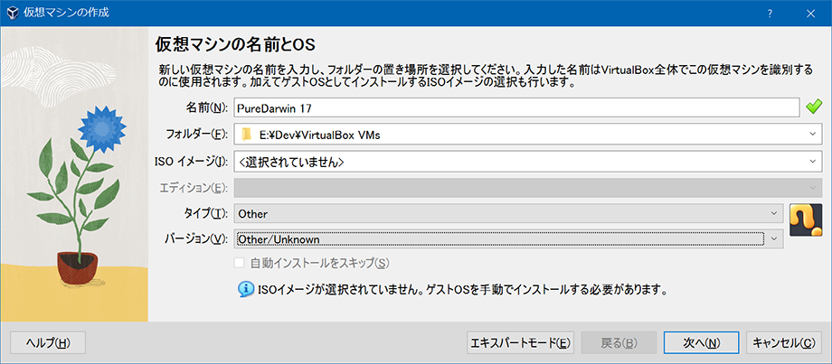
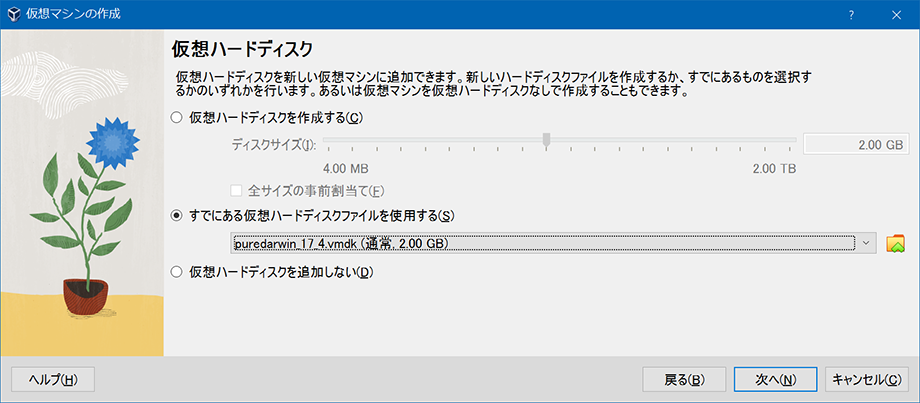
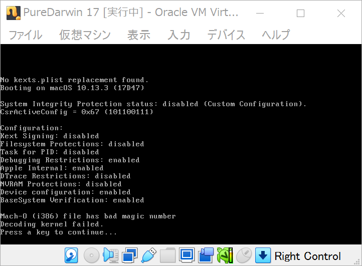
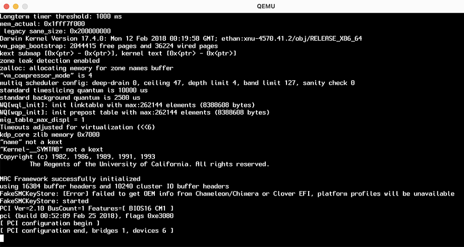
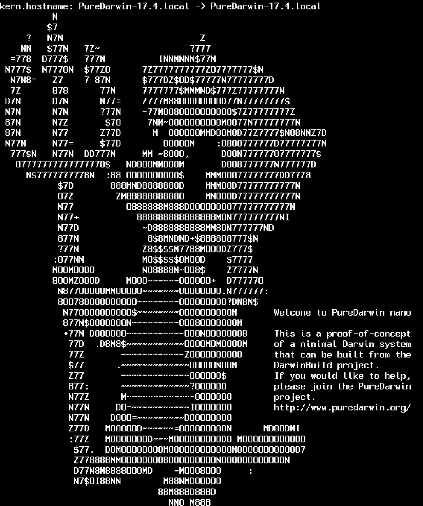
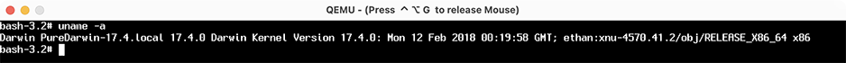

QEMU で PureDarwin 環境を作ってみる
MacOS の根幹である Darwin の、オープンソース版である PureDarwin というモノを触ってみる。この前試した FreeBSD みたいな感じで簡単に導入できるかと思ったら上手く行かなくて、QEMU という別のエミュレータを試してみた。
VirtualBox では起動できず
PureDarwin の VMDK ファイルを以下からダウンロードする。
- PureDarwin | Moving the Darwin community in the right direction!
- PureDarwin/PD-17.4-Beta: Beta vmdk for the community
https://www.pd-devs.org/Beta/pd_17_4.vmdk.xz→ 解凍する
Windows 10 上の VirtualBox で VMDK ファイルを基に仮想ディスクを作り、それを利用する形で仮想マシンを立ててみた。
-

- タイプ : Other
- バージョン : Other/Unknown
- (後に色々試すが MacOS を選択してもダメだった)
- 
起動してみると、次のようなエラーが出た。

No kexts.plist replacement found.
Booting on macOS 10.13.3 (17D47)
(中略)
Mach-0 (i386) file has bad magic number
Decoding kernel failed.
なんか CPU が合わない雰囲気のエラーメッセージだが、どうしたらいいか分からず。
QEMU を使ってみる
PureDarwin の GitHub README には、QEMU という別のエミュレータを使った起動コマンドが書かれていたので、QEMU とやらを試してみる。
コチラによると Windows では pacman でインストールできるっぽいので、Git SDK の pacman コマンドでインストールを試みたが上手くインストールできず断念。素直に MSYS2 を使えば行けると思うけど、面倒臭がってやらなかった。ｗ
MacOS だと Homebrew でインストールできるようなので、Mac で試してみた。
$ brew install qemu
$ qemu-system-x86_64 --version
QEMU emulator version 8.2.1
Copyright (c) 2003-2023 Fabrice Bellard and the QEMU Project developers
# 以下で VMDK ファイルを指定して PureDarwin を起動する
$ qemu-system-x86_64 -m 8192 -cpu Penryn -smp 2 -netdev user,id=network0 -device rtl8139,netdev=network0 -serial stdio -drive format=vmdk,file=pd_17_4.vmdk
起動させてみるとこんな感じでウィンドウが開いた。

可愛らしい起動ロゴも一瞬見えた。

ターミナルが起動した。$ uname -a で確認してみると、確かに PureDarwin v17.4 が起動していた。

起動してみれば MacOS のターミナルと大して変わらないので、特別な感動はなく。ｗ